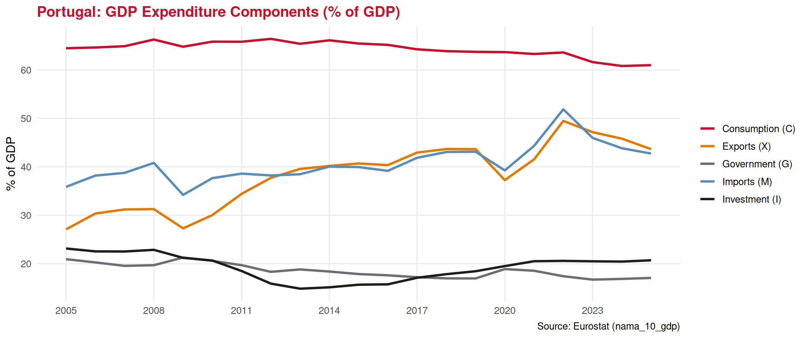
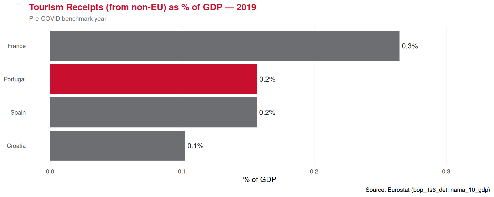

Gross Domestic Product
Lecture 22: The Measurement of Total Production
Paulo Fagandini
2026
Recap: Aggregation ⏪
Last lecture we established why we aggregate:
✅ Individual transactions → economy-wide totals
✅ The circular flow: \(Y = C + I + G + NX\)
✅ Value-added approach avoids double-counting
✅ Three equivalent measurement approaches: expenditure, income, production
Today we go deep on the most important aggregate of all:
👉 Gross Domestic Product (GDP) — the economy’s single most-watched number
Part I: What Exactly is GDP?
The Definition — Three Parts 📏
Gross Domestic Product (GDP) is the market value 1️⃣ of final goods and services 2️⃣ produced in a country during a given period of time 3️⃣
Each word matters. Let us unpack all three parts carefully.
1️⃣ Market Value — Why Use Prices?
A modern economy produces thousands of different goods and services:
- Hotel nights 🏨
- Flights ✈️
- Restaurant meals 🍴
- Sunscreen ☀️
- Legal advice 💼
1️⃣ Market Value — Why Use Prices?
You cannot simply add them up in physical units. How many hotel nights equal one flight?
👉 We use market prices to convert everything to euros, making addition possible.
\[\text{GDP} = \sum_{n=1}^{N} P_n \times Q_n\]
💡 Goods that aren’t sold on markets (e.g. unpaid domestic work) are NOT included. Government services are included at cost.
The “Motorália” Example 🏭
From the textbook — imagine a tiny economy producing only engine filters and spark plugs:
| Good | Qty | Price | Value |
|---|---|---|---|
| Engine filters | 4 | €3.50 | €14.00 |
| Spark plugs | 6 | €5.00 | €30.00 |
| Shoes | 3 pairs | €20.00 | €60.00 |
| GDP | €104.00 |
We cannot add “4 filters + 6 plugs + 3 shoes”. But we can add €14 + €30 + €60 = €104.
👉 Prices act as weights — more valuable goods count for more in GDP.
🤔 Quick check:
If instead the economy produced 3 filters, 3 plugs, and 4 pairs of shoes (same prices):
\((3 \times 3.50) + (3 \times 5.00) + (4 \times 20.00)\)
\(= 10.50 + 15.00 + 80.00 = \mathbf{€105.50}\)
GDP is higher — even though fewer filters and plugs were made — because shoes are more valuable.
2️⃣ Final Goods and Services — No Double Counting
Final goods and services are sold to end users. Intermediate goods are used as inputs in the production of other goods and are not counted separately in GDP.
2️⃣ Final Goods and Services — No Double Counting
The bread chain — tourism breakfast in Porto:
| Stage | Revenue | Input cost | Value Added |
|---|---|---|---|
| Wheat farm | €0.50 | €0.00 | €0.50 |
| Flour mill | €1.20 | €0.50 | €0.70 |
| Bakery | €2.00 | €1.20 | €0.80 |
| GDP contribution | €2.00 |
✔️ Right: €0.50 + €0.70 + €0.80 = €2.00
🏨 Tourism example:
A tour operator buys bus transport (€20/person) and packages it into a day trip sold for €80/person.
- Bus company value added: the fare they charged their suppliers (say €8 in fuel/maintenance) subtracted from €20 → €12
- Tour operator value added: €80 − €20 = €60
- Total GDP contribution: €72
👉 The €80 ticket price is not all GDP — it contains the bus company’s contribution too.
3️⃣ Produced in a Country, in a Given Period
“In a country” = within borders, regardless of ownership
✔️ A German-owned hotel operating in Lisbon → counted in Portugal’s GDP
❌ A Portuguese-owned hotel operating in London → counted in UK’s GDP, not Portugal’s
“During a given period” = only current production counts
✔️ A new apartment built in 2025 → counts in 2025 GDP
❌ A 20-year-old house sold in 2025 → not in 2025 GDP (it was counted when built)
✔️ BUT the estate agent’s commission on that sale → counted (a new service)
Tricky cases:
❓ Stock market purchases? No — financial transactions, not production
❓ Government pensions? No — transfer payments, not new production
❓ Illegal activities? No (in standard accounts) — not market transactions
❓ Tourism spending by foreigners in Portugal? Yes — production of services within Portuguese borders → export of services
Part II: The Expenditure Approach
GDP = C + I + G + NX 📊
The expenditure approach adds up all spending on final goods and services:
| Agent | Component | Symbol | Tourism example |
|---|---|---|---|
| Households | Consumption | C | Portuguese family’s domestic holiday |
| Firms | Investment | I | Hotel building new pool |
| Government | Gov. expenditure | G | Airport expansion by the state |
| Rest of world | Net exports | NX | German tourist spending in Algarve |
\[\boxed{Y = C + I + G + NX}\]
Portugal’s GDP Components — A Look at the Data 🇵🇹

👉 Notice how exports have grown substantially — tourism plays a major role here.
A Worked Example: Portugal-Sized Economy 📝
| Component | Sub-item | €bn |
|---|---|---|
| Consumption (C) | 395 | |
| Durable goods | 100 | |
| Non-durable goods | 125 | |
| Services | 170 | |
| Investment (I) | 142 | |
| Business fixed capital | 80 | |
| Residential housing | 40 | |
| Inventory change | 22 | |
| Government (G) | 178 | |
| Net Exports (NX) | 58 | |
| Exports | 95 | |
| Imports | −37 | |
| GDP = C+I+G+NX | 773 |
Using the structure from the textbook (Table 15), here is a hypothetical national accounts table:
💡 Key observations:
- C is always the largest component (~50% of GDP in most economies)
- I is the most volatile component — it collapses in recessions
- G is relatively stable (government keeps spending even in downturns)
- NX can be negative (trade deficit) or positive (surplus)
🏖️ Tourism in NX:
When a foreign tourist spends in Portugal, it counts as an export of services (increases X and therefore NX).
When a Portuguese resident holidays abroad, it counts as an import of services (increases M, reduces NX).
Part III: Nominal vs Real GDP
The Problem with Nominal GDP ⚠️
Nominal GDP is calculated using current year prices.
\[\text{Nominal GDP}_t = \sum_n P_{n,t} \times Q_{n,t}\]
The problem: Nominal GDP can rise even if nothing more is produced — simply because prices went up.
Example from the textbook — economy producing only pizzas and shorts:
| Year | Q Pizza | P Pizza | Q Shorts | P Shorts | Nominal GDP |
|---|---|---|---|---|---|
| 2022 | 10 | €10 | 15 | €5 | (10×10)+(15×5) = €175 |
| 2023 | 20 | €12 | 30 | €6 | (20×12)+(30×6) = €420 |
Nominal GDP rose by a factor of 2.4. But quantities only doubled. Why the discrepancy?
👉 Prices also rose — inflation inflated the nominal figure.
Real GDP — Stripping Out Inflation 🧹
Real GDP values quantities at base year prices, removing the effect of inflation: \[\text{Real GDP}_t = \sum_n P_{n,\text{base}} \times Q_{n,t}\]
Continuing the example — base year = 2022:
\[\text{Real GDP}_{2023} = (20 \times \underbrace{€10}_{\text{2022 price}}) + (30 \times \underbrace{€5}_{\text{2022 price}}) = €200 + €150 = \mathbf{€350}\]
| Nominal GDP | Real GDP | |
|---|---|---|
| 2022 | €175 | €175 (base year: same) |
| 2023 | €420 | €350 |
| Change | ×2.4 | ×2.0 ✓ |
- ✔️ Real GDP correctly shows production doubled — matching the actual quantities.
The GDP Deflator 🔥
The gap between nominal and real GDP tells us about inflation.
\[\text{GDP Deflator} = \frac{\text{Nominal GDP}}{\text{Real GDP}} \times 100\] \[\text{Inflation rate} \approx \frac{\text{Deflator}_t - \text{Deflator}_{t-1}}{\text{Deflator}_{t-1}} \times 100\%\]
From our example:
\[\text{GDP Deflator}_{2023} = \frac{€420}{€350} \times 100 = \mathbf{120}\]
Prices rose by 20% between 2022 and 2023.
💡 The GDP deflator is broader than the CPI (covers all goods in the economy, not just a consumer basket) — we will study the CPI in the inflation lecture.
Nominal vs Real GDP — Portugal 🇵🇹

👉 The gap between the two lines = the price level rising over time. Always use real GDP for growth comparisons.
Part IV: GDP Per Capita and Its Limits
GDP Per Capita — Comparing Across Countries 🌐
A country with a larger population naturally has more GDP. To compare living standards, we use GDP per capita:
\[\text{GDP per capita} = \frac{\text{GDP}}{\text{Population}}\]
What GDP Does NOT Measure ❌
GDP is a powerful summary statistic — but it has important limitations:
❌ Inequality
GDP can grow while the bottom half of society gets poorer. A country with GDP/capita €30,000 might have most people earning far less.
❌ Unpaid work
Home cooking, childcare, volunteering — economically valuable, but invisible in GDP.
❌ Environmental degradation
Cutting down a forest raises GDP (timber production). Rebuilding it does too. The loss of the natural asset is not recorded.
❌ Quality of life
Health, safety, trust, leisure time — not captured by GDP.
❌ Informal economy
Cash transactions, barter, illegal activity — all absent.
🏖️ For tourism specifically:
A tourist’s satisfaction with their experience, the quality of the landscape, or the cultural authenticity of a destination — none of these show up in GDP.
👉 Hence complementary measures: Human Development Index (HDI), Genuine Progress Indicator (GPI), Tourism Satellite Accounts (TSA).
GDP and Tourism Receipts — How Big is the Sector? 📈

Exercises
📝 Exercise 1 — Multiple Choice
In 2022, a small economy produced 100 hotel nights at €80 each and 50 restaurant meals at €20 each. In 2023, it produced 120 hotel nights at €90 each and 60 meals at €25 each. Using 2022 as the base year, what is the real GDP growth rate from 2022 to 2023?
(A) 20%
(B) 25%
(C) 32%
(D) 20% in real terms and 32% in nominal terms — they are the same
Correct answer: (A)
Real GDP 2022 = (100×80) + (50×20) = €8,000 + €1,000 = €9,000
Real GDP 2023 (at 2022 prices) = (120×80) + (60×20) = €9,600 + €1,200 = €10,800
Growth = (10,800 − 9,000) / 9,000 = 20%
Nominal GDP 2023 = (120×90) + (60×25) = €10,800 + €1,500 = €12,300 → nominal growth ≈ 36.7%. Option D is wrong: they differ precisely because prices changed.
📝 Exercise 2 — Multiple Choice
Which of the following is the most accurate statement about GDP per capita as a measure of well-being?
(A) It is a perfect measure of living standards since it adjusts GDP for the size of the population
(B) It captures inequality within the country, making it a reliable welfare indicator
(C) It is a useful but incomplete measure — it misses inequality, unpaid work, environmental quality, and leisure
(D) It includes the value of informal tourism activities such as home-sharing between friends
Correct answer: (C)
GDP per capita is a useful starting point but misses inequality (the same average can hide vast differences), unpaid work, environmental costs, and quality of life. Options A and B overstate its power. Option D is incorrect — informal/non-market transactions are excluded from GDP.
📝 Exercise 3 — Open Question
The table below shows prices and quantities for a small tourism economy (Wakanda) that produces only two goods: hotel nights and guided tours.
| Year | Q Hotels | P Hotels | Q Tours | P Tours |
|---|---|---|---|---|
| 2022 | 500 | €100 | 200 | €50 |
| 2023 | 600 | €115 | 250 | €60 |
(a) Calculate nominal GDP for 2022 and 2023.
(b) Using 2022 as the base year, calculate real GDP for 2023.
(c) Calculate the GDP deflator for 2023 and interpret it.
(d) A tourism minister claims: “Our economy grew by 38% last year.” Is this claim correct? What would be a more accurate statement?
Solution:
(a) Nominal GDP 2022 = (500×100) + (200×50) = €50,000 + €10,000 = €60,000 Nominal GDP 2023 = (600×115) + (250×60) = €69,000 + €15,000 = €84,000
(b) Real GDP 2023 = (600×100) + (250×50) = €60,000 + €12,500 = €72,500
(c) GDP Deflator 2023 = (84,000 / 72,500) × 100 = 115.9 Interpretation: the price level rose by approximately 15.9% between 2022 and 2023.
(d) The minister is citing nominal growth: (84,000 − 60,000)/60,000 = 40% (even higher — the claim is already understated). The real growth rate is (72,500 − 60,000)/60,000 = 20.8%. The correct statement is: “Our economy’s real output grew by approximately 21% — the rest of the nominal increase reflects inflation.”
Summary 📚
Today we covered:
✅ The three-part definition of GDP: market value / final goods / produced in a country
✅ The value-added approach — avoiding double counting
✅ What is and isn’t included (transfer payments, financial transactions, used goods: out)
✅ The expenditure approach: \(Y = C + I + G + NX\)
✅ Nominal vs Real GDP — why we strip out inflation using base-year prices
✅ The GDP deflator as a measure of economy-wide price changes
✅ GDP per capita — useful but incomplete as a welfare measure
Next lecture (Lecture 23):
🔥 Inflation in depth — the CPI, how it is measured, consequences of high inflation, and implications for tourism
Thank You! 👋
Questions?
📧 paulo.fagandini@ext.universidadeeuropeia.pt
Next class: Thursday, May 14th, 2026

Economics of Tourism | Lecture 22